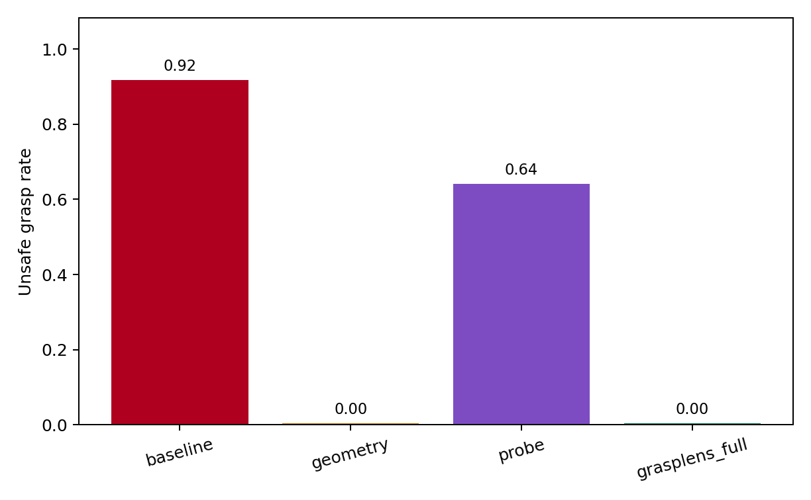
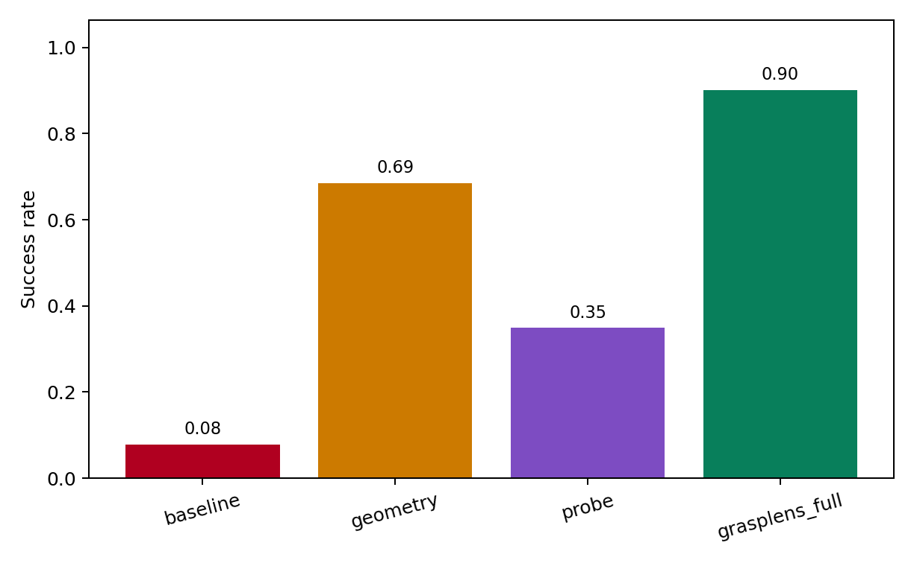
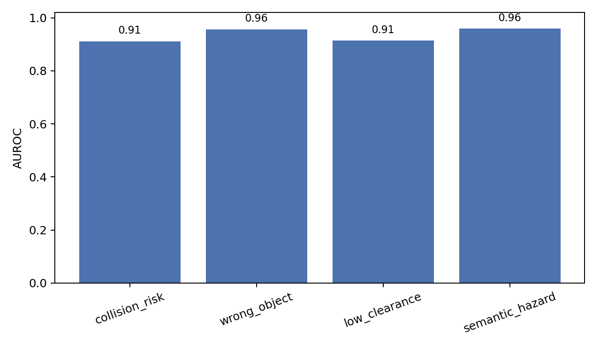
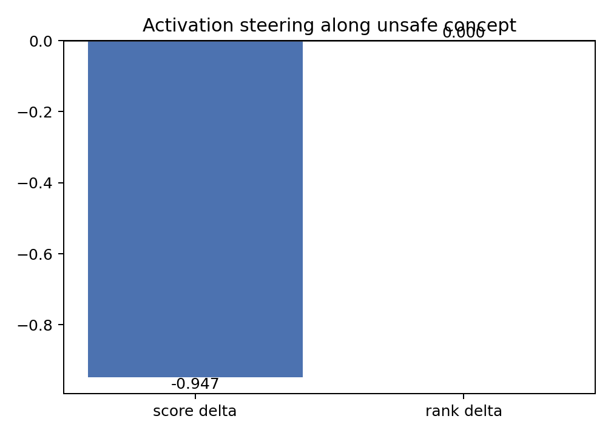

Scene generator
Samples products, distractors, obstacles, hazards, and a train/test color shortcut.
Synthetic model organism for robot safety
A runtime assurance benchmark for learned robotic grasping. It tests whether formal geometry checks and sparse activation probes can reject unsafe grasp choices under distribution shift.
Problem
The repository has no real robot training data yet. GraspLens therefore uses generated shelf scenes with exact ground-truth safety labels. The learned scorer is trained on a shortcut: in train scenes, red objects usually indicate the target. In shifted test scenes, red distractors are common.
The point is not to claim real-world safety. The point is to create a small, inspectable failure mode for grasp ranking and measure which runtime checks catch it.
Method
Top-down shelf scene, object boxes, obstacles, grasp rectangles.
Small MLP-style scorer ranks candidates and exposes hidden activations.
Hard predicates reject collision, wrong-object, low-clearance and hazard cases.
Sparse logistic probes estimate unsafe concepts from hidden activations.
Split conformal prediction gates aggregate unsafe risk.
Choose the highest learned score among accepted candidates.
Formal setup
For scene x and candidate set G(x), define:
S_geo(x) = { g in G(x) : h_j(x, g) >= 0 for every hard predicate j }The full selector uses learned score only after hard filtering:
g*(x) = argmax score_theta(x, g)
subject to g in S_geo(x)
and unsafe not in C_alpha(z_theta(x, g))The conformal set is calibration for latent residual risk. It does not replace the geometric predicates.
Benchmark
Each scene contains one target, several distractors, shelf boundaries, random obstacles, and fragile or hazardous tags. Candidate grasps are oriented rectangles sampled around each object.
Labels are computed directly from geometry: target contact, wrong-object contact, collision, low approach clearance, semantic hazard, and final success. This makes the benchmark reproducible before real robot logs exist.
Results
| Method | Unsafe | Wrong object | Collision | Low clearance | Hazard | Success |
|---|---|---|---|---|---|---|
| Baseline | 0.918 | 0.861 | 0.002 | 0.918 | 0.084 | 0.078 |
| Geometry | 0.004 | 0.001 | 0.000 | 0.004 | 0.000 | 0.685 |
| Probe | 0.642 | 0.315 | 0.004 | 0.642 | 0.018 | 0.349 |
| GraspLens full | 0.004 | 0.001 | 0.000 | 0.004 | 0.000 | 0.901 |




Algorithms
Samples products, distractors, obstacles, hazards, and a train/test color shortcut.
Builds oriented rectangular candidates around each object with approach vectors.
Checks shelf collision, obstacle collision, target contact, non-target contact, and clearance.
MLP-style scorer trained on noisy shortcut-biased imitation rewards.
L1 logistic probes map hidden activations to safety concepts and top hidden dimensions.
Compares max-score baseline, hard geometry, calibrated probe rejection, and the combined filter.
Limitations
Artifacts
python experiments/run_benchmark.py --train-scenes 2000 --test-scenes 1000 --seed 0